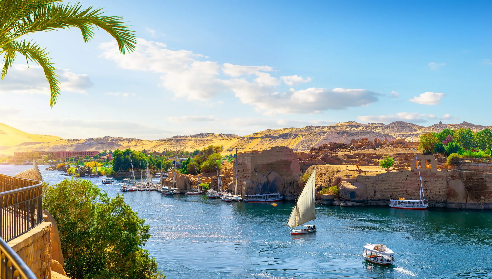

The Nile is the longest river in the world, stretching over 4,000 miles through northeastern Africa before emptying into the Mediterranean Sea. For thousands of years, its annual flooding deposited rich, dark soil along its banks, creating fertile farmland in the middle of the desert. This reliable source of water and food was the foundation that allowed ancient Egyptian civilization to thrive.